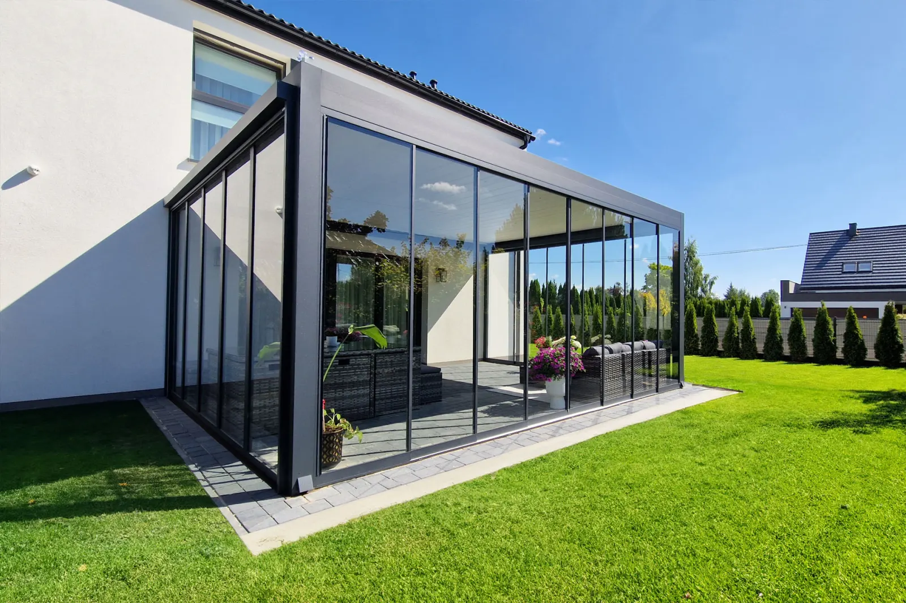

Elegantne staklene klizne stijene za bočno zatvaranje terase, lođe, balkona ili vrta restorana. Štite od vjetra i kiše, a pogled i svjetlo ostaju netaknuti.
Staklene klizne stijene učinkovito štite od vremenskih uvjeta, a ne ograničavaju prolaz svjetla. U bezokvirnoj izvedbi stvaraju gotovo nevidljivu ogradu prostora.

Bezokvirne staklene klizne stijene štite od vjetra i kiše, a svjetlo i pogled ostaju netaknuti. Vanjski prostor koristite od ranog proljeća do kasne jeseni, na terasi, lođi, balkonu ili u vrtu restorana.
Osnovni tehnički podaci staklenih kliznih stijena.
Staklene klizne stijene na pergolama, terasama, balkonima i ugostiteljskim objektima.